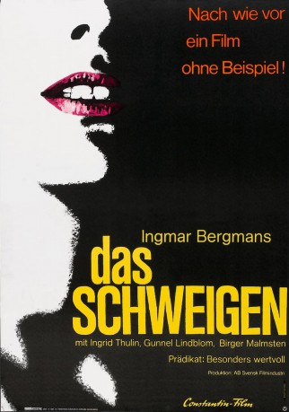

#9310 Das Schweigen
Alternativ: The Silence (Englischer Titel)
 
 IMDB-Wertung: 8.0 / 10
IMDB-Wertung: 8.0 / 10  Metascore: 0
Metascore: 0 
Die zwei Schwestern Ester und Anna und Annas neunjähriger Sohn müssen auf ihrer Heimreise in einem Hotel einkehren. Die anderen Gäste sprechen eine ihnen unverständliche Sprache. Von der Außenwelt abgeschnitten, passieren plötzlich merkwürdige Dinge mit den zwei Schwestern.
Jahr: 1963
Dauer: 95 Minuten
FSK: 18
Land: Schweden Studio: Constantin FilmTonspuren:
Untertitel: Deutsch,
Auflösung: 1080p (1488x1080) Größe: 6717 MB
Genre: Drama
Regisseur:  Ingmar Bergman
Ingmar Bergman
Drehbuch: Ingmar Bergman
Soundtrack: Ivan Renliden
Darsteller:
 Ingrid Thulin als Ester / Elder sister
Ingrid Thulin als Ester / Elder sister Gunnel Lindblom als Anna / Younger sister
Gunnel Lindblom als Anna / Younger sister- Birger Malmsten als The Bartender
- Lissi Alandh als Woman in Variety Hall (uncredited)
- Olof Widgren als The Old Man (uncredited)
- Jörgen Lindström als Johan / Anna' son
- Håkan Jahnberg als The Waiter
- Karl-Arne Bergman als The Paperboy (uncredited)
- Leif Forstenberg als Man in Variety Hall (uncredited)
- Eduardo Gutiérrez als Impressario (uncredited)
- Eskil Kalling als The Bar Owner (uncredited)
- Birger Lensander als The Doorkeeper (uncredited)
- Kristina Olausson als Anna (uncredited)
- Nils Waldt als The Cashier (uncredited)
Datei: X:\FSK18-1900-1999\Schweigen, Das (1963, FSK18, 1488x1080).mkv seit 27.07.2018
Festplatte: FSK18
 Es gibt insgesamt 108 Filme in der Gruppe 'FSK18-1900-1999'
Es gibt insgesamt 108 Filme in der Gruppe 'FSK18-1900-1999'